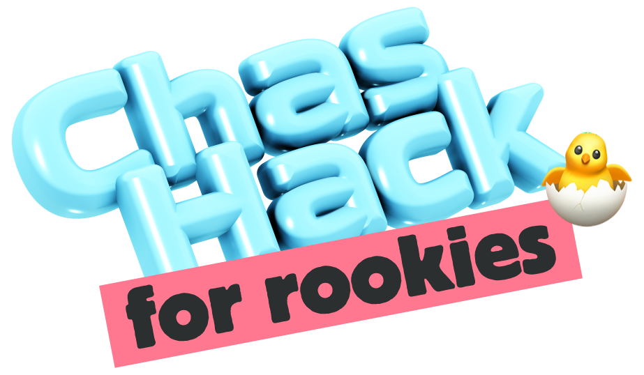

Idag bygger ni lagets egen hemsida
Ni börjar med tre tomma filer. När dagen är slut har ni en riktig webbplats om ert lag, publicerad på nätet så att vem som helst kan öppna den. Huvudspåret tar er dit, steg för steg. Side quests är extrauppdrag ni plockar på er längs vägen för att göra sidan snyggare, roligare och värd fler poäng.
Ta ert repo
Forka start-repot. Där ligger index.html, style.css
och script.js - tomma och redo.
Följ huvudspåret
Tolv steg från tom fil till publicerad sida. Bocka av allt eftersom och se stigen fyllas i.
Plocka side quests
Extrapoäng för funktion, styling och rena skoj. Ta dem i vilken ordning ni vill, när ni vill.
Start-repot
Allt arbete sker i ert eget repo. Den här sidan är bara uppgiftslistan - här bockar ni av och håller koll på poängen.
Så vinner ni
Poängen avgör placeringen, men alla tolv steg i huvudspåret måste vara godkända för att laget ska kunna vinna. Ett lag som samlat massor av side quests men hoppat över huvudspåret hamnar utanför tävlingen.
Anledningen är enkel: målet för dagen är en färdig lagsida. Side quests gör den bättre, men de ersätter den inte.
Så granskas det
Under dagen bockar ni av uppgifter allt eftersom. Poängen syns direkt på topplistan som väntande.
I slutet av dagen får varje lag ett annat lag tilldelat. Då går ni in under Granska, tittar på deras repo och sida, och godkänner eller nekar varje uppgift. Godkända poäng är de som räknas till slut.
Huvudspåret
Tolv obligatoriska steg. Ta dem uppifrån och ner - varje steg bygger vidare på det förra. Fastnar ni på ett: fråga en handledare hellre än att stå stilla.
Er stig
Side quests
Frivilliga extrauppdrag som bygger vidare på lagsidan. Svårare än huvudspåret och värda mer poäng. Ta dem i vilken ordning ni vill - men se till att huvudspåret blir klart, annars räknas ni inte i tävlingen.
Granska
Topplistan
Uppdateras live. Gula siffror är poäng som väntar på granskning, gröna är godkända. Det är de gröna som avgör till slut.
Admin
För arrangörerna. Kräver PIN.
Granskningspar
Delar ut ett lag att granska till varje lag. Lagen läggs i en slumpad ring, så ingen granskar sig själv och alla blir granskade en gång. Kör den när alla lag är registrerade.
Fas
Bygga = lagen jobbar och bockar av. Granska = granskningen är öppen. Klart = allt låst, slutresultatet står fast.